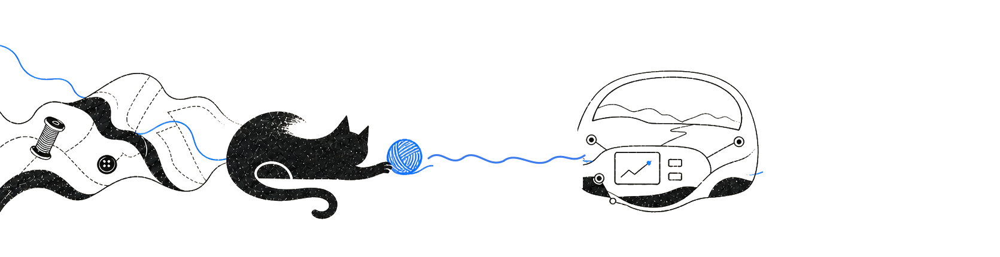

PREVIEW / REVIEW BUILD
从复杂系统中，
做出产品判断。
角色概览、About 与精选项目的独立检查页；文字、路径和交互均保持可访问。
01
ROLE OVERVIEW / 角色概览
把问题拆开，
再一起收口。

ABOUT
ABOUT / 关于我
判断，如何落地？
让判断在真实世界里成立。
工业设计训练了我观察，产品工作让我学会取舍。
现在，我把用户、实物和系统放到同一张桌子上，从问题发生的地方开始，逐步把方案变成可以验证、可以交付的东西。
我会关注
- 用户与场景看见问题发生在哪里
- 硬件与约束摊开限制，明确取舍
- 规则与协作让方案可执行、可验证
02
SELECTED WORKS / 精选项目
四个开放问题，
四种落地尺度。


NEXT / 下一步
下一段经历，
我们一起创造？
04
DIGITAL TWIN / 数字分身
想知道我怎么做判断？
可以和我的数字分身聊项目、取舍，以及我如何把复杂问题拆成可执行的方案。
安全服务连接待连接